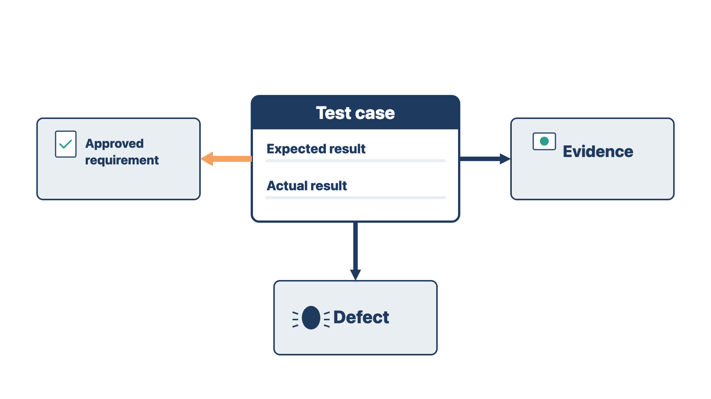
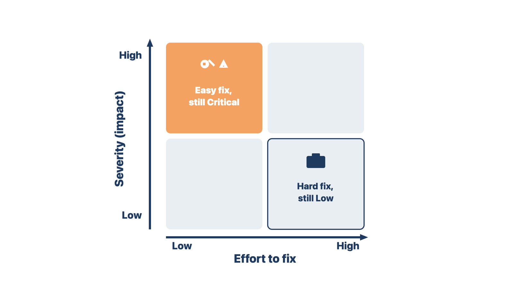

A test that another person cannot repeat gives you a result nobody can check. Reproducible tests let the builder see the failure and let QC prove the fix.
A reproducible test case contains:

| Test type | The question it asks |
|---|---|
| Functional | Does the configured function give the expected result? |
| Workflow | Does work move through roles, queues, decisions, and follow-up correctly? |
| Permission and segregation | Can each role do what it should, and is it blocked from what it should not see or approve? |
| Data integrity | Are values created, changed, sent, calculated, and shown correctly, with no duplicates or loss? |
| Interface | Do sample transactions complete both ways, including acknowledgment, rejection, correction, retry, and duplicate prevention? |
| Form and document | Does the approved version show, prefill, route, sign, store, and retrieve as expected? |
| Reporting and audit | Can the clinic produce the approved reports and audit evidence, and do they match source activity? |
| Performance | Are response times for key tasks acceptable at the clinic's busiest hour? |
| Usability and accessibility | Can the intended role finish the task correctly under real conditions and approved accessibility needs? |
| Downtime and recovery | Can users follow the approved backup process, keep required information, and catch up after the system returns? |
| Regression | Did a change break something that passed before? (See "Retest the fix, then run regression tests.") |
An acknowledgment is the message a receiving system sends back to confirm it got a transaction. Performance testing matters most for cloud systems. A slow network at a busy front desk can look like a system failure.
Rule: Write every test so another person can repeat it and get the same result.
Check yourself
Severity decides what blocks a release. If the team rates by effort or by who made the mistake, a dangerous defect can pass as "minor."
A defect is a result that does not match the approved requirement. Severity is how much harm the defect can cause. Define the severity model before testing. One useful starting model:
Priority is the order in which the team works on defects. Priority can differ from severity. An easy fix to a Critical defect is still Critical. A hard fix to a cosmetic defect is still Low.

Do not close a defect because someone says it is fixed. Retest the original failure. Then run regression tests on the behavior around it.
Rule: Severity measures harm, not effort to fix.
The shared rule: rate what could happen to the patient or clinic, not how hard the fix is.
Check yourself
A fix can break something else. If you only check the original failure, a new problem can reach training or go-live unseen.
A regression is something that used to work and stops working after a change. Regression testing means rerunning tests that passed before and comparing the new result with the old one. The U.S. Food and Drug Administration (FDA) software validation guidance describes it this way. The FDA also names the step before it, regression analysis: reviewing what a change touches to decide which tests to rerun.
A retest asks, "Is the original failure fixed?" A regression test asks, "Did the fix, or any other change, break something else?" A defect is not ready to close until both answers are recorded.
Run them whenever something changes in a version you already tested:
| Change | Examples | What to rerun first |
|---|---|---|
| Defect fix | Corrected routing rule, template, or role | Tests that use the same rule, template, role, or queue |
| Configuration change | New value list, order set, alert, or form version | Workflows that show, use, or report that item |
| Vendor upgrade or patch | New build, hotfix, or version update | Core set plus every area named in the release notes |
| Interface change | New mapping, code set, endpoint, or partner upgrade | Both directions: send, acknowledge, reject, result, duplicate check |
| Data change | Test conversion load, code-set update | Records, lists, and reports that read the changed data |
| Environment change | New device, browser, operating system, or network | Sign-in, printing, scanning, signature, and device steps |
| Promotion | Moving a tested version to training or production | A short check of the core set in the new environment |
The Office of the National Coordinator for Health IT (ONC) publishes the SAFER Guides (Safety Assurance Factors for EHR Resilience). Its 2025 guide on System Management recommends this discipline for electronic health records (EHRs). Test updates and local changes alone and with connected systems. Test before go-live and again in production. Retest interfaces before and after go-live and after hardware or software updates.
Some small vendors have no separate test environment. Then some checks must run in production. Use clearly named test patients that no one could mistake for real patients, as the same SAFER Guide advises. Follow the approved plan from Module 4.
Rule: Every change gets a retest of the fix and a regression check of what the change touches.
In both cases the clinic's own screens looked unchanged. The change sat somewhere else.
Check yourself